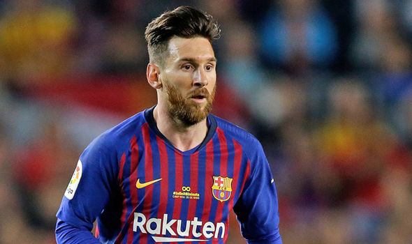
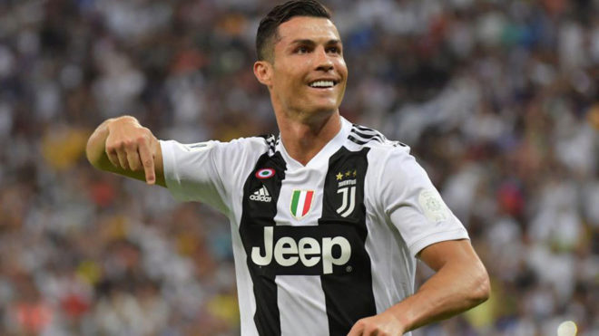
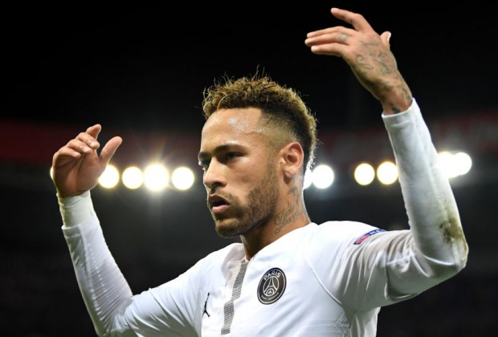
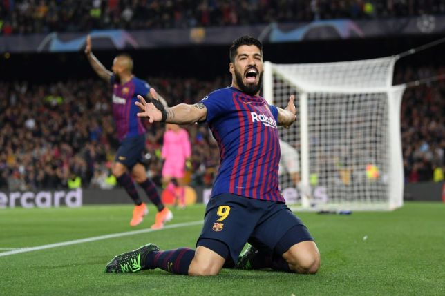
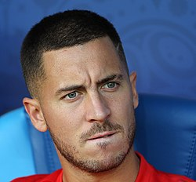

Messi
Lionel Andrés Messi Cuccittini born 24 June 1987) is an Argentine professional footballer who plays as a forward and captains both Spanish club Barcelona and the Argentina national team. Often considered the best player in the world and regarded by many as the greatest player of all time, Messi has won a record-tying five Ballon d'Or awards, four of which consecutively, and a record five European Golden Shoes. He has spent his entire professional career with Barcelona, where he has won a club-record 33 trophies, including 10 La Liga titles, four UEFA Champions League trophies and six Copas del Rey. Both a prolific goalscorer and a creative playmaker, Messi holds the records for most goals in La Liga and Europe's top-five leagues (417), a La Liga season and club league season in Europe (50), a club football season in Europe (73), most official goals in a calendar year (91), El Clásico (26), most hat-tricks in the UEFA Champions League (8), most wins in La Liga, as well as those for most assists in La Liga (167) and the Copa América (11). He has scored over 690 senior career goals for club and country.
Cristiano Ronaldo
Cristiano Ronaldo dos Santos Aveiro born 5 February 1985) is a Portuguese professional footballer who plays as a forward for Italian club Juventus and captains the Portugal national team. Often considered the best player in the world and widely regarded as one of the greatest players of all time, Ronaldo has a record-tying five Ballon d'Or awards,[note 2] the most for a European player, and is the first player to win four European Golden Shoes. He has won 28 trophies in his career, including six league titles, five UEFA Champions League titles and one UEFA European Championship. A prolific goalscorer, Ronaldo holds the records for most official goals scored in the UEFA Champions League (126), the UEFA European Championship (9), as well as those for most assists in the UEFA Champions League (34) and the UEFA European Championship (6). He has scored over 700 senior career goals for club and country.
Neymar
Neymar da Silva Santos Júnior born 5 February 1992), commonly known as Neymar Jr. or simply Neymar, is a Brazilian professional footballer who plays as a forward for French club Paris Saint-Germain and the Brazil national team. Considered one of the best players in the world,[6] he is known for his dribbling, finishing, skill, pace, and ability to play with both feet.
Luis Suàrez
Luis Alberto Suárez Díaz born 24 January 1987) is a Uruguayan professional footballer who plays as a striker for Spanish club Barcelona and the Uruguay national team. Often regarded as one of the best players in the world, Suárez has won 18 trophies in his career, including six league titles and a UEFA Champions League title at club level, and a Copa América with Uruguay. A prolific goalscorer, Suárez has won two European Golden Shoes, an Eredivisie Golden Boot, a Premier League Golden Boot, as well as ending the six-year dominance of Lionel Messi and Cristiano Ronaldo by winning La Liga's Pichichi Trophy in 2016. He has scored over 400 senior career goals for club and country.
Hazard
Eden Michael Hazard born 7 January 1991) is a Belgian professional footballer who plays for English club Chelsea and captains the Belgium national team. Primarily playing as an attacking midfielder and as a wide midfielder, Hazard is known for his creativity, speed, dribbling and excellent passing. He has earned critical acclaim for his playing style, with the media, coaches, and players drawing comparisons to Ballon d'Or winners Lionel Messi and Cristiano Ronaldo, and Hazard is widely considered one of the best players in the world.
